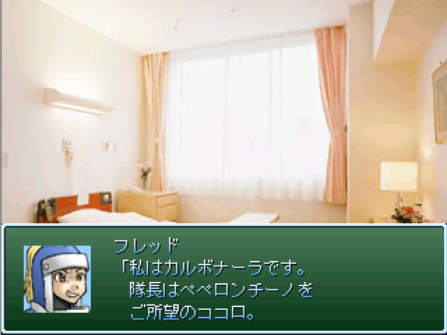

|
|
 |
|
| 作者：鳳天舞の陣－１ | |
| ジャンル：ヨムゲ | |
| ツクール：2000 | |
| 作者コメント： 他にナイデュラゲーで参加してた方が居たので、 前々から温めていたナイデュラゲーをカブセていこうと思ったものの、 作ってみても自分の納得の行くクオリティにはまるで達せず、 加えてPCの不具合発生によりモチベもお亡くなりになりました。 そこでそっちはまた今度にして、今回はだいぶ以前にとった安価の、 作っていたり放ったらかしていたりしていたもので参加することにしました。 どっちみち遅刻はするんだけど。 僕はカルボナーラが好きです。 |
|
| 管理人コメント： 私はやっぱりナポリタン。 |
|
| ダウンロード(4.82MB) / 感想掲示板 |
|
| 前の作品 / 次の作品 / TOPへ戻る | |